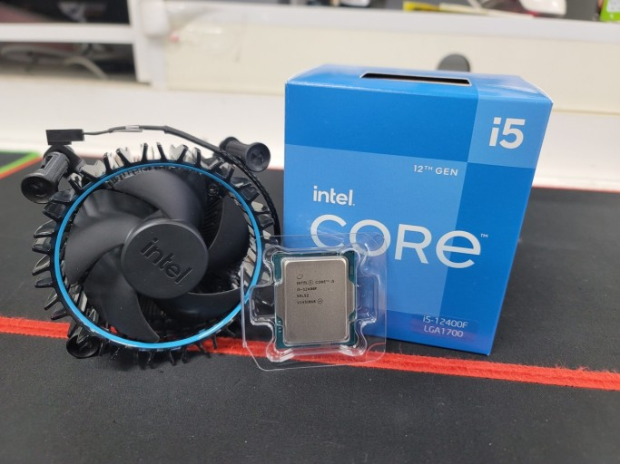

Computer
CPU
C
entral
P
rocessing
U
nit
CPU 혹은 중앙 처리 장치는 컴퓨터에서 기억, 해석, 연산, 제어라는 4대 주요 기능을 관할하는 장치를 말한다. CPU는 컴퓨터의 대뇌라고 할 정도로 매우 중요한 부분 중 하나다. 컴퓨터가 동작하는 데 필요한 모든 계산을 처리하며 컴퓨터를 뇌에 비유하자면 CPU는 사고를 담당하는 대뇌피질 정도로 볼 수 있겠다. 대뇌피질이 있어야 인간이 사고를 할 수있듯이 컴퓨터도 CPU가 있어야 작동할 수있다.

[Intel i5-12400f]
Hardware
1.
CPU
2.
MainBoard
3.
RAM
4.
GPU
5.
Power supply
6.
Cooler
7.
SSD
8.
HDD
Software
Operating System
1.
Window
2.
Linux
3.
UNIX